地政学
カトマンズはインドと中国に挟まれた内陸国の首都で、外交、援助、国境政策、移民労働の窓口です。空港と山道は世界への通路であり、ヒマラヤの緩衝地帯として政治的な重みを持ちます。首都機能も集まりますね。

🇳🇵 ネパール / 南アジア / World City Atlas
ヒマラヤ山麓の盆地に、王宮広場、仏塔、寺院、巡礼路、移民労働、観光、行政が折り重なる首都です。宗教都市であり、地震復興と都市化の圧力を同時に抱える生活圏です。
都市の骨格
カトマンズは山に囲まれた谷底の都市です。王宮広場、スワヤンブナート、ボダナート、パシュパティナート、環状道路、空港、郊外住宅地が近く、巡礼と通勤が同じ道を使います。
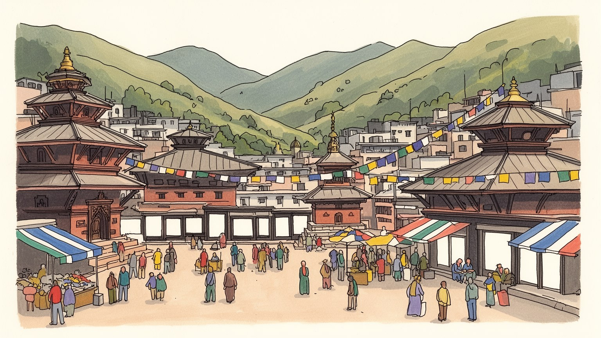
カトマンズはインドと中国に挟まれた内陸国の首都で、外交、援助、国境政策、移民労働の窓口です。空港と山道は世界への通路であり、ヒマラヤの緩衝地帯として政治的な重みを持ちます。首都機能も集まりますね。
観光、手工芸、行政、教育、建設、飲食、小売が都市を支えます。海外就労からの送金も家計を動かし、旅行者向けの店と住民向けの市場が近い距離で交差します。若者の進路も揺れています。家族経済も支えますね。
ヒンドゥー寺院、仏塔、僧院、女神クマリの伝統、ネワールの祭礼が重なります。宗教は観光名所ではなく、供物、火葬、巡礼、暦、職人技として毎日の街路に現れます。祈りが都市を動かします。生活の暦です今も続きます。
旅行者は旧王宮、仏塔、路地、市場を歩きますが、住民には水不足、大気汚染、交通渋滞、地震復興、家賃が日常問題です。観光収入と生活の安定を両立できるかが都市の核心になります。住民の負担も問われますね。
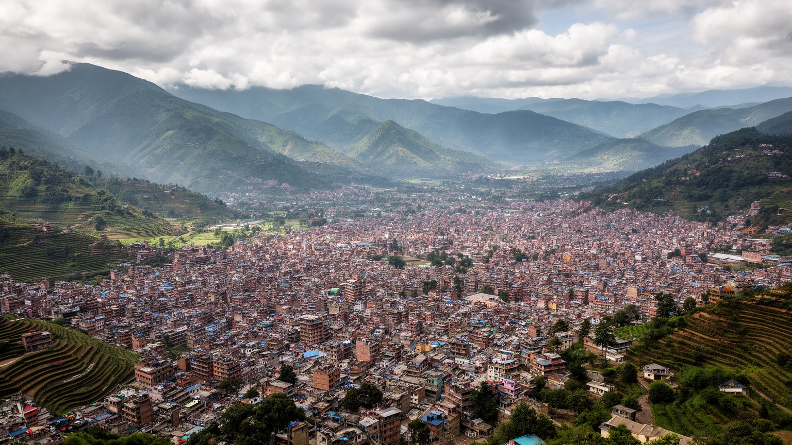
カトマンズはヒマラヤの山並みに守られた谷の都市であり、同時に外へ出る道が限られた首都です。南にはインド平原へ向かう道路、北にはチベット高原へ続く山道があり、空港は観光客、移民労働者、援助関係者、留学生を結ぶ最も重要な門になります。ネパールはインドと中国の間に位置するため、カトマンズの外交は大国の影を常に意識します。道路整備、電力、通信、観光、国境管理、災害支援は、単なる都市政策ではなく地域秩序の一部です。盆地の内側では王宮広場、寺院、行政機関、大学、病院、空港、郊外住宅地が近く、国家の中枢と日常生活が圧縮されています。カトマンズを見ることは、山国の孤立ではなく、限られた通路を通じて世界と交渉する首都の姿を見ることです。外交団、国際機関、援助団体、登山会社、宗教団体が同じ市街地に集まり、世界政治は会議室だけでなく道路工事、空港の混雑、山岳観光の許可、災害時の支援物資として現れます。首都の弱さは、国土の弱さとも直結します。道が崩れ、燃料が不足し、国境が緊張すれば、盆地の市場と家庭はすぐ影響を受けます。だからカトマンズの地政学は、地図上の位置ではなく生活物資の流れとして経験されます。山に囲まれた景観の美しさは、同時に都市が外部依存を抱える現実も示しています。首都の安心は山道と空路の安定に支えられます。
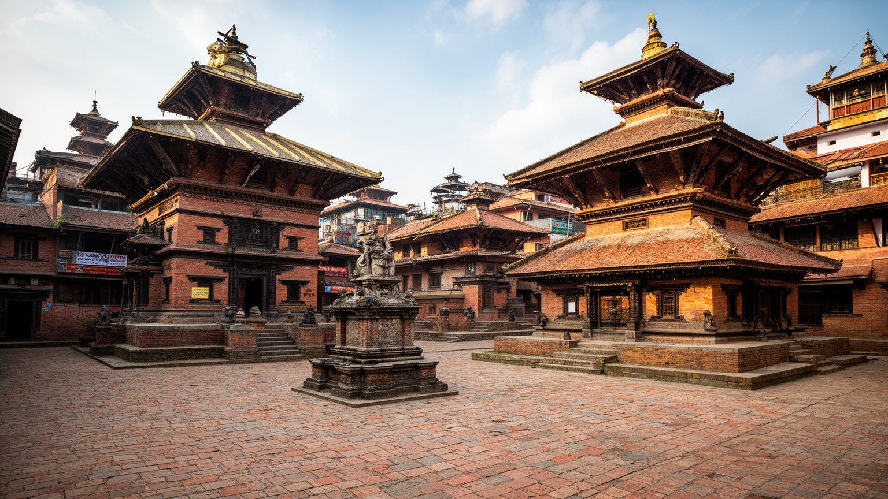
カトマンズの旧市街を形作ってきたのは、ネワールの都市文化と王宮都市の記憶です。ダルバール広場、木彫りの窓、中庭、寺院、細い路地、祭礼の山車、金属工芸、石彫、米と香辛料の市場は、単なる観光資源ではなく、都市の生活技術として積み重なってきました。近代国家の首都になる前から、盆地にはカトマンズ、パタン、バクタプルが競い合う都市文明があり、王権、商人、僧侶、職人、農村が結びついていました。建物の装飾は美術館の展示品ではなく、神を迎え、家族を守り、商いを支える場所の記号です。再開発や地震復興で古い建物が失われると、景観だけでなく職人の技能、路地の使い方、祭りの経路も変わります。カトマンズの文化を読むには、王宮の正面だけでなく中庭と作業場を見る必要があります。中庭は採光や通風の装置であると同時に、親族、隣人、職人、祭礼を結ぶ小さな公共空間でした。そこでは穀物を干し、子どもが遊び、儀礼の準備が行われ、路地の外からは見えない共同性が保たれます。観光客が短時間で通り過ぎる場所にも、家族の記憶と仕事の手順があります。都市保存は外観だけでなく、この内側の生活を守れるかで決まります。職人の手が途切れれば、建物だけでなく都市を読むための言語も失われます。だから文化継承は教育と仕事の問題でもあります。今も続きます。
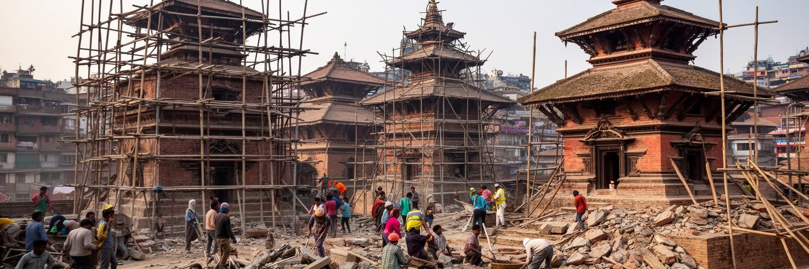
二〇一五年のネパール地震は、カトマンズの都市像を大きく変えました。王宮広場の寺院、古い住宅、塔、学校、道路、地方へ続く生活網が壊れ、修復と再建は今も都市の記憶に残ります。被害は建物の古さだけで決まったわけではなく、施工の質、地盤、密集度、避難路、貧困、行政手続きの複雑さにも左右されました。世界遺産の修復は国際的な注目を集めましたが、住民にとっては家を直し、仕事を戻し、親族を弔い、学校と市場を再開することが切実でした。伝統建築を再建するには、木工、金属、石彫、煉瓦の技能が必要で、急いでコンクリート化すれば防災と景観の両方に課題が残ります。地震復興は過去を元に戻す作業ではなく、次の災害で誰が守られるかを決める都市政策です。カトマンズを歩くと、修復中の足場と日常の祈りが並び、災害の記憶がまだ生活の中にあります。復興には資金だけでなく、土地の権利、職人の育成、耐震基準、地域の合意が必要です。古いものを残すほど危険になるわけでも、新しい建物なら安全というわけでもありません。都市が学ぶべきことは、記憶を壊さずに安全を高める方法です。広場に戻る祭礼や市場のにぎわいは、復興が建物の完成だけで測れないことを示しています。次の地震に備えることは、過去の被害を忘れないための実践でもあります。記憶と備えは同じ都市の仕事です。
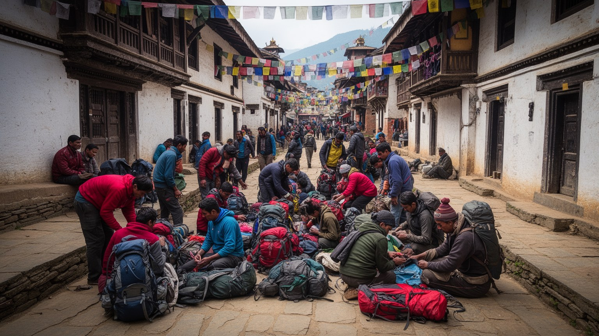
カトマンズ観光の強さは、世界遺産に登録された王宮広場、仏塔、寺院が、住民の生活圏と切り離されていない点にあります。旅行者はタメルの宿から旧市街を歩き、祈りの輪、路地の商店、屋上の食堂、土産物店、修復中の寺院を短い距離で巡ります。ヒマラヤ登山やトレッキングの入口としても重要で、装備店、ガイド、旅行会社、両替、空港、バス乗り場が都市の観光経済を作ります。一方で、観光が集中すれば家賃は上がり、住民向けの店が旅行者向けに変わり、聖地の静けさも損なわれます。文化遺産を守ることは、古い建物を写真映えする形で保存することではありません。祭礼の経路、職人の仕事、住民の買い物、宗教上の作法を含めて守る必要があります。観光、行政、教育、医療、手工芸、小売、建設、交通、飲食は近い距離で絡み、海外就労からの送金も家計を支えます。旅行者が買う土産物や飲食の背後には、低賃金の接客、長時間の建設労働、不安定な季節雇用があります。入場料やガイド料が修復と雇用へ戻るか、利益が一部だけに偏るかで、遺産都市の意味は変わります。観光の成功は、訪問者の満足だけでなく、働く人が首都で暮らし続けられる条件によって測られます。繁忙期と閑散期の差は収入を不安定にし、宿や土産物店で働く人の生活設計を難しくします。観光は都市の誇りであると同時に、労働の安定を問う制度でもあります。
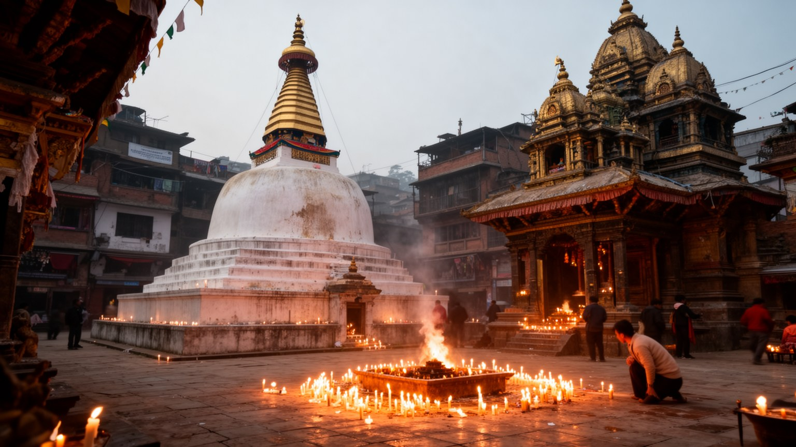
カトマンズでは、ヒンドゥー教と仏教が別々の領域に閉じず、街路、家庭、祭礼、職人技の中で重なります。パシュパティナートではシヴァ信仰と火葬の儀礼が川辺に現れ、ボダナートではチベット仏教の巡礼者が仏塔を時計回りに歩き、スワヤンブナートでは丘の上から盆地を見下ろす祈りが続きます。生き神クマリの伝統、インドラ・ジャトラ、ダサイン、ティハールのような祭りは、政治、家族、商売、暦を結ぶ都市の時間です。観光客にとって寺院は写真の対象ですが、住民にとっては供物を買い、親族の死を送る場所であり、子どもの成長や商売の安全を祈る場所です。宗教は古い信仰の残りではなく、急速に変わる首都で人が関係を確認し直す方法です。カトマンズの公共空間は、祈りの動きで読めます。祈りの場には階層、性別、民族、巡礼者と観光客の距離も現れます。聖地を維持する僧侶、清掃人、花売り、楽師、火葬に関わる人、警備員の仕事がなければ、儀礼は続きません。宗教都市の豊かさは信仰の多さだけでなく、それを支える日々の労働と敬意の作法にあります。写真を撮る都市ではなく、立ち止まり方を学ぶ都市です。巡礼路の混雑、川の汚れ、商業化は信仰の場を変えます。それでも朝夕の灯明や読経が続くことで、都市は観光地以上の時間を保っています。その時間が都市の芯になります。
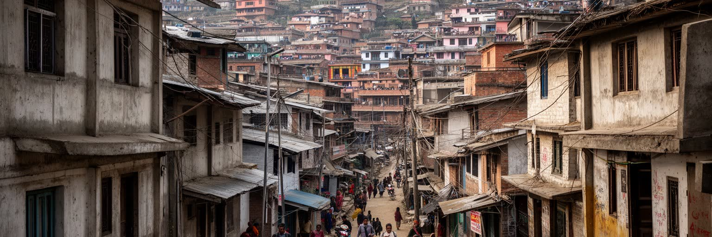
カトマンズの都市拡大は、盆地という限られた地形の中で進みます。環状道路の内側には旧市街、行政、大学、病院、商業が密集し、外側には住宅地、学校、倉庫、工場、農地から変わった宅地が広がります。鉄道網が発達した大都市とは違い、移動の多くはバス、ミニバス、タクシー、バイク、徒歩に頼ります。道路が狭く、車両が増え、舗装や排水が不十分な場所では、渋滞、粉じん、事故、騒音が日常化します。急速な人口増加と郊外化により、住宅は上へ伸び、路地は混み、家賃は上がり、古い中庭住宅と新しいコンクリート住宅が隣り合います。水道供給が安定しない地域では、タンク、井戸、給水車、雨水利用が生活の一部になります。水を買う費用や貯める手間は、家計と女性の労働に影響します。旧市街では共同の中庭や水場が社会関係を支えてきましたが、建物の高密化と土地の細分化でその機能は弱まります。住宅の安全性も大きな課題です。地震後に耐震性への意識は高まりましたが、費用や土地権利の問題で十分な改修が難しい家もあります。カトマンズの暮らしを理解するには、聖地の華やかさと同時に、台所の水、家賃、学校、病院、歩道の安全まで見る必要があります。盆地の限界は、都市計画の失敗をすぐ生活の負担へ変えます。農地が宅地へ変わる速度が速いほど、雨水の行き場や近隣のつながりも失われます。住まいの問題は土地利用と防災の問題です。
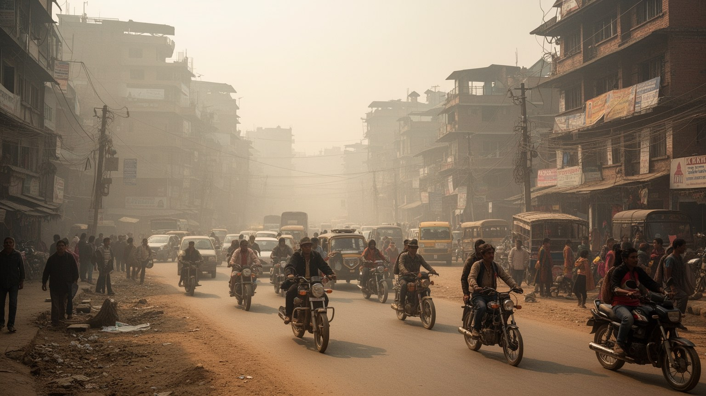
カトマンズ盆地は山に囲まれているため、空気が滞りやすく、大気汚染が生活の質を左右します。乾季には粉じん、車両排ガス、建設現場、レンガ窯、野焼き、道路の未舗装部分から出る粒子が目立ち、冬の朝は霧や煙が谷に残ります。雨季は空気を洗いますが、排水不良や洪水、土砂の流入も起こります。気候は標高のため極端な暑さだけではありませんが、都市化による緑地の減少、舗装、交通量の増加は熱と空気の問題を悪化させます。大気汚染は観光の印象を損なうだけでなく、子ども、高齢者、屋外労働者、バイク通勤者、呼吸器疾患を持つ人に直接影響します。環境対策は自然保護の話にとどまらず、公共交通、舗装、建設管理、廃棄物処理、エネルギー、緑地を一体で考える必要があります。美しい山の眺めが見えない日は、都市の成長が盆地の限界と衝突していることを示します。空気の悪さは誰にでも同じように降りかかるようで、実際には屋外で働く人、道路沿いに住む人、質の悪い燃料を使う家庭へ強く響きます。気候と環境の対策は、観光景観を回復するためだけでなく、健康格差を縮める政策でもあります。緑地、歩道、排水、公共交通を整えることは、都市の呼吸を取り戻すことに近い意味を持ちます。晴れた日に山が見える喜びは、環境改善の分かりやすい指標にもなります。空気は都市全体の共有財です。
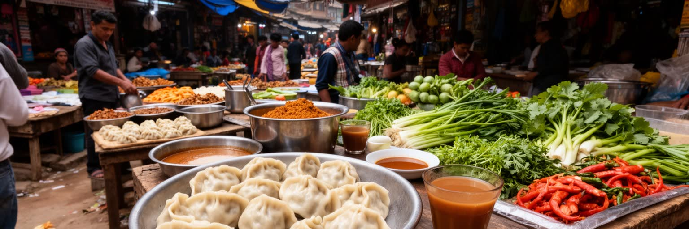
カトマンズの食は、ネワール料理、山岳地域の食、インド平原との交流、チベット系の食文化が重なって生まれます。モモ、ダルバート、チャタマリ、バラ、セクワ、甘いミルクティー、香辛料、米、豆、漬物は、家庭、屋台、食堂、祭礼、観光店で違う意味を持ちます。市場では野菜、米、香辛料、花輪、供物、肉、金物、布が並び、宗教生活と台所が近い距離でつながります。観光客向けのカフェや多国籍料理店が増える一方、住民の日常食は価格、燃料、水、交通、地方からの供給に左右されます。食の場は階層差も映します。旅行者が集まる店、学生の安い食堂、家族経営の小店、祭りの共同調理は、それぞれ都市の別の社会を見せます。カトマンズを味わうことは、ヒマラヤの玄関口というイメージだけでなく、交易、移民、宗教、家計の現実を知る入口です。市場の匂いと音は、都市の生活がまだ路上に開かれていることを教えます。食材は盆地の近郊農地、遠方の山村、インドとの交易、都市内の卸売を通じて届きます。燃料価格や道路事情が変われば、食卓の値段もすぐ変わります。観光客が楽しむ一皿の背後には、農家、運転手、卸売商、料理人、皿洗いの仕事があります。食を読むことは、都市と農村の依存関係を読むことでもあります。祭礼の日の特別な料理は、家族と地域を結び直します。食卓は宗教と経済が交わる小さな地図です。
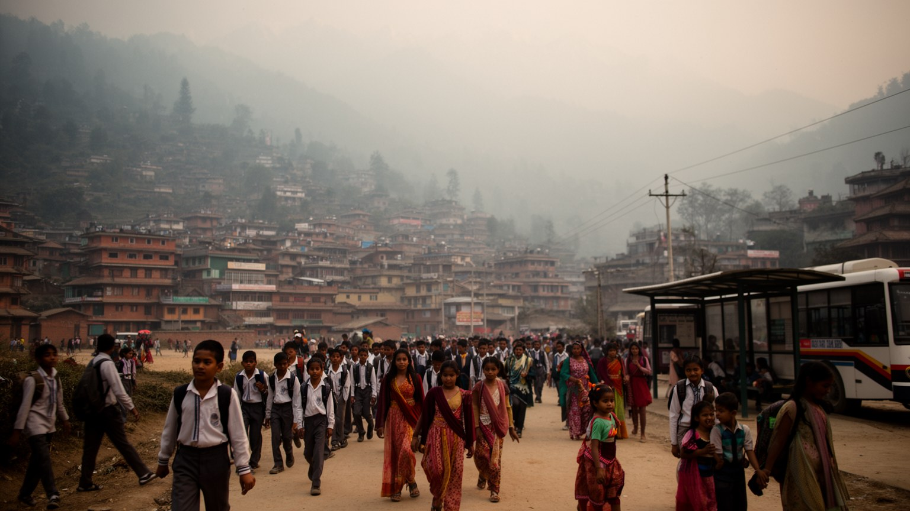
カトマンズはネパール各地から若者を集める教育都市でもあります。大学、専門学校、語学学校、試験準備校、看護や情報技術の訓練施設が集まり、地方の家庭は子どもの進学のために首都へ部屋を借ります。学生街の食堂、コピー店、寮、バイク、インターネットカフェは、観光都市とは別の顔を作ります。しかし学びの先に必ず安定した仕事があるわけではありません。国内の雇用が限られると、若者は海外留学や就労を現実的な選択肢として考えます。カトマンズは夢を集める都市であると同時に、出発の準備をする都市です。湾岸諸国、マレーシア、インド、欧米、日本などへ働きに出る人の出発と帰国は、空港、求人業者、語学学校、銀行、家族の住宅投資を動かします。送金は家を建て、子どもを学校へ通わせ、医療費を払う力になりますが、家族の別居や労働搾取のリスクも伴います。若い世代は英語、デジタル技能、観光業、医療、行政試験、移民手続きを通じて世界へつながります。その一方で、家族の世話、送金への期待、政治への失望、住宅費の高さも抱えます。教育は個人の上昇手段ですが、学費や家賃は家庭に重くのしかかります。首都が才能を集めるだけでなく、戻って働ける場所を用意できるかが社会の活力を決めます。図書館、共同作業の場、手頃な部屋、信頼できる就職情報は、若者が都市に残るための基盤です。教育都市の評価は、卒業後の選択肢で決まります。
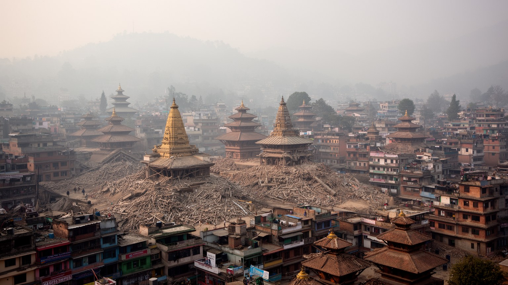
カトマンズは、経済規模だけで測ると巨大金融都市ではありません。しかし世界都市として重要なのは、ヒマラヤの宗教、内陸国家の政治、観光、移民労働、災害復興、若者の進路、都市環境の問題が一つの盆地に集まっているからです。王宮広場、仏塔、火葬の川辺、タメルの宿、空港、環状道路、郊外住宅地、大学、給水タンク、修復中の寺院は、互いに別の話ではありません。巡礼者と旅行者、海外へ向かう労働者、地方から来た学生、旧市街の職人、行政職員が同じ道路を使い、同じ大気を吸います。カトマンズの魅力は、聖地の美しさだけでなく、変化の激しい首都で人が祈り、働き、学び、家族を支える姿にあります。同時に、水不足、大気汚染、地震リスク、交通、住宅、観光圧力は都市の弱さを見せます。この都市を読むことは、南アジアとヒマラヤが交わる場所で、文化遺産と現代生活をどう両立させるかを考えることです。ラサから仏教の高地世界を南へ下り、ブッダガヤへ向かう精神的な地図の中でも、カトマンズは重要な節点になります。ここでは聖地は遠い過去ではなく、空港、宿、バス、商店、学校、水道、復興工事の中にあります。都市の価値は、古い寺院を残すことと、現在の住民が尊厳を持って暮らせることを同時に満たせるかで決まります。カトマンズを読む視点は、祈りの美しさと生活の困難を同じ地図に置くことです。そこにこの都市の世界的な意味があります。